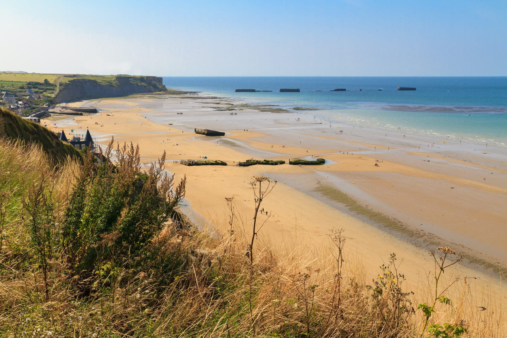
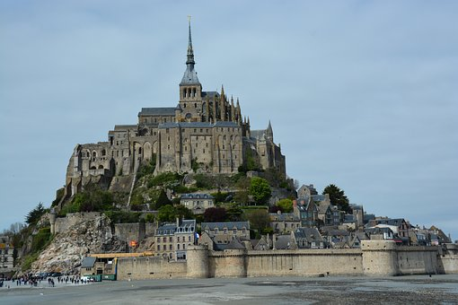
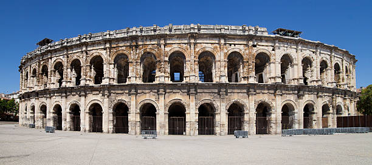
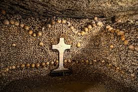
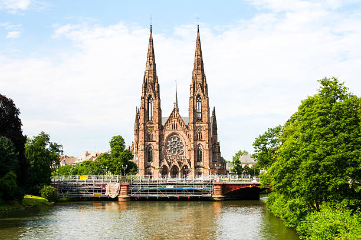

Top 5 Historical Sites to Visit
- D-Day Landing Beaches
- Mont-Saint-Michel
- Nîmes Arena
- The Catacombs of Paris
- Strasbourg Cathedral

The D-Day landing are one of the most visited places in France because of it's history with World War 2. The about 50 mile beach is a great visit to pay tribute to the lost ones who fought here.

This remote island of the bay of Normandy is a great place to visit and adventure on it's own island. It has lots of history in this place because of it's diverse architect.

The Nîmes Arena was one home to the traditional Roman Games and where the Romans would train for events. This momunental arena is just one of the roman arenas they would use. It would we a great place to visit if you are intrested.

20 meters below ground, underneath Paris is a hidden maze of dark galleries that was built centuries ago. These old quarries are now the symbol of a rich history and you can go through roughly a mile circuit of amazing creations of the eighteenth and nineteenth century.
